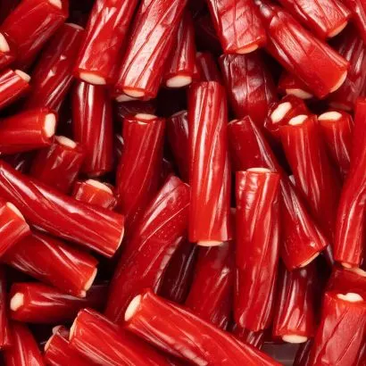
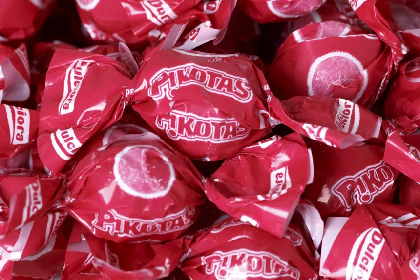
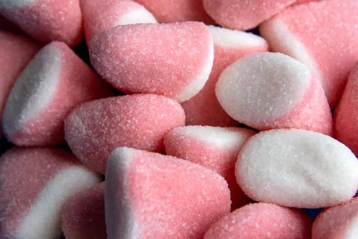
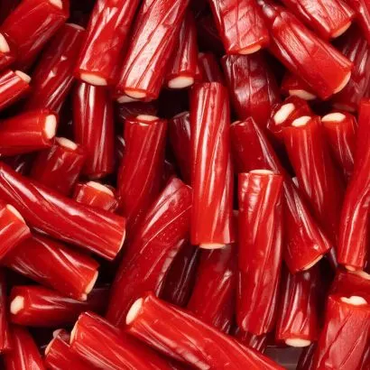
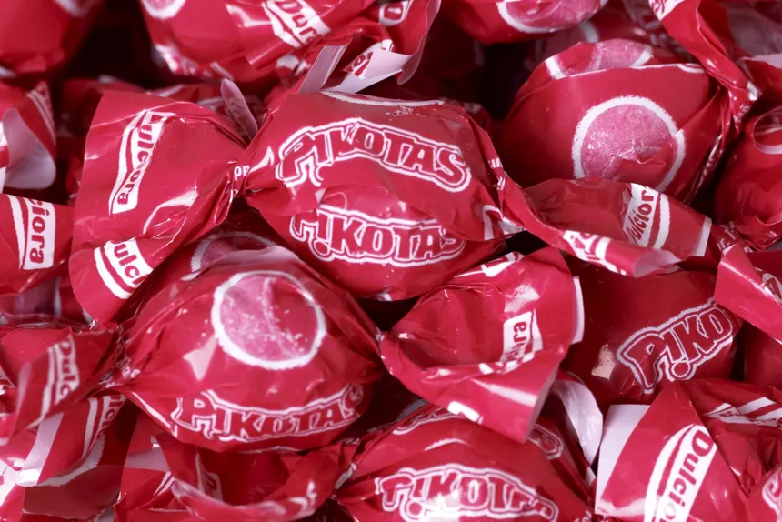
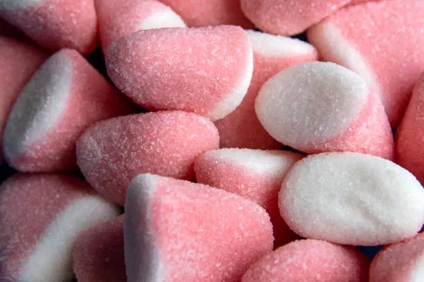

ROJO - FRESA
FRESA
EL SABOR MÁS ICÓNICO DE LAS CHUCHES: DULCE, NOSTÁLGICO Y SIEMPRE PRESENTE.
DESCRIPCIÓN
La chuche de fresa es un clásico que nunca pasa de moda. Su sabor combina un dulzor intenso con un toque sutil de acidez que despierta el paladar desde el primer bocado. La textura suave y ligeramente masticable permite disfrutar de cada instante, mientras su aroma recuerda a fresas frescas recién cortadas. Este sabor es el favorito de muchas generaciones y está presente en multitud de formas: gominolas, caramelos blandos, piruletas y chicles, haciendo que cada experiencia sea una explosión frutal inolvidable.
CURIOSIDADES SOBRE LA FRESA
- El sabor de fresa es uno de los más antiguos en la industria de las chuches.
- Está presente en el 80% de las bolsas surtidas.
- Existen versiones naturales y artificiales del aroma.
- El color rojo se asocia con energía y pasión.
PERFIL DE SABOR DETALLADO
| ATRIBUTO | VALOR | DESCRIPCIÓN |
|---|---|---|
| Dulzor | ⭐⭐⭐⭐ | Intenso y dominante desde el primer mordisco. |
| Acidez | ⭐⭐ | Un toque de acidez para equilibrar lo dulce. |
| Intensidad aromática | ⭐⭐⭐⭐⭐ | Aroma muy reconocible y persistente. |
| Suavidad | ⭐⭐⭐⭐ | Sensación agradable en la boca. |
TIPOS DE CHUCHES DE FRESA
- Gominolas: gominolas clásicas con forma y color de fresa.
- Regalices de fresa: tiras o fragmentos masticables con sabor afrutado, generalmente rellenos.
- Picotas: caramelos redondo con sabor intenso y rellenos de gelatina.
- Piruletas: un clásico que nunca falla, olvidables en la guantera de cualquier coche.
- Besitos: sabor fresa/nata sueave y clásico.
 





COMBINACIONES RECOMENDADAS
- Gominolas de fresa + chicles de menta: un contraste refrescante y afrutado.
- Caramelos de fresa + regalices de limón: mezcla dulce y ligeramente ácida.
- Piruletas de fresa + chocolate blanco: sabor intenso y cremoso.
- Besitos de fresa + caramelos ácidos: un equilibrio perfecto entre dulzor y acidez.
- Gominolas de fresa + frutas deshidratadas: una experiencia más natural y frutal.